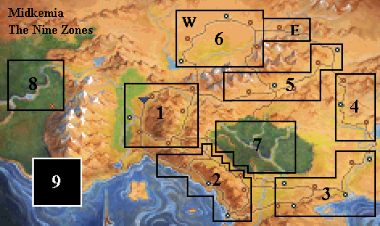
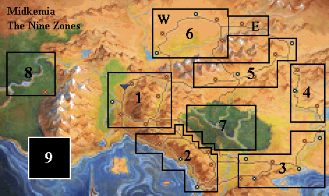

[HOME]


The above nine Zones will be referred to quite often in the Walkthroughs, so please familiarize yourself with them. Although the basic Quests of each Chapter can be confined to one or two Zones, some Chapters, especially the first three, offer much greater freedom of movement. With each Chapter new (and more powerful) Enemies will be added in most Zones. Unfought Combats will usually carry over to the next Chapter. This is especially important in the first three Chapters:EXAMPLE: The Highcastle Sector in Zone 5. It is quite possible to finish the game without ever visiting this Sector. However, if you visit it in Chapter 1, you can fight 4 Combats here. If you then re-visit in Chapter 2, you will find 3 new Combats, and 1 new combat in Chapter 3. Since these combats carry over, you would find 7 Combats here if you first visit the Sector in Chapter 2, and 8 Combats if you first visit in Chapter 3.
A SHORT GUIDE TO ZONES BY CHAPTER:
CHAPTER ONE. The basic Quest is confined to Zones 1 and 2. You can, however, travel freely in Zones 3, 4, 5, and 7. Most unfought Combats will carry over to Chapter 2. [Five Combats are unique to Chapter 1. One Combat is unique to Chapters 1 and 2. 100 more Combats will carry over from Chapter 1 to Chapter 2; 50 of these will carry over to Chapter 3, 47 to Chapter 6, 3 to Chapter 7.]
CHAPTER TWO. The basic Quest is confined to Zone 3. Here you can also travel freely in Zones 1, 2, 4, 5, and 7. New Combats can be fought in each Zone, and most unfought Combats will carry over to Chapter 3. [Apart from the Combats carried over from Chapter 1, 14 NEW Combats are unique to Chapter 2. 28 more NEW Combats will carry over to Chapter 3, and 14 of these will carry over to Chapter 6.]
CHAPTER THREE. The basic Quest is confined to Zones 3 and 4. You can travel freely in Zones 1, 2, 5, and 7 as well. New Combats can be fought in each Zone, and many unfought Combats will carry over to Chapter 6. [Apart from the Combats carried over from Chapters 1 and 2, 29 NEW Combats are unique to Chapter 3. 19 more NEW Combats will carry over to Chapter 6, and 1 of these will carry over to Chapter 7.]
CHAPTER FOUR. This Chapter is completely confined to Zone 6 (West). This Zone can never be entered again after the Chapter finishes. [59 Combats await you here. Nalar's Rib will eliminate 19 of these.]
CHAPTER FIVE. This Chapter is confined to the Easternmost sectors of Zone 5 (the Northwarden and Dencamp sectors), and Zone 6 (East). The Combats [22] are NEW - no Combats will have carried over from earlier Chapters. These Zones can never be entered again after the Chapter finishes.
CHAPTER SIX. The Basic Quest is mostly confined to Zones 1 and 2, the Mac Mordain Cadal, and Zone 8 (Elvandar). Some sub-Quests take place in Zones 3 and 4, and Zone 7 can be freely travelled. Zone 5 will be closed. Apart from the Combats carried over from Chapters 1, 2, and 3, there are many NEW Combats - 9 in Zone 1, 17 in Zone 2, 7 in Zone 3, 5 in Zone 4. In addition, there are 6 new Combats in the LOWER LEVEL of the Krondor Sewers. There are 3 additional Combats in the LOWER LEVEL of the Mac Mordain Cadal, and once you exit on the Western side, you can fight 23 Combats before reaching Elvandar. There are 5 extra Combats in the Ancient Valheru Ruins.
CHAPTER SEVEN. This Chapter is totally confined to Zone 7 (Dimwood) which can not be exited. There are 22 NEW Combats [22], in addition to a handful carried over from Chapters 1, 2, 3, and 6.
CHAPTER EIGHT. This Chapter takes place in an alien world, far away from Midkemia (Zone 9). There are 41 Combats to be fought here.
CHAPER NINE. The final quest is totally confined to the Sethanon Caverns, which can only be entered in this Chapter. 20 Combats may be encountered.